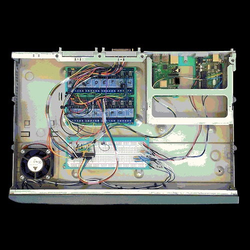

Most of my time at Davis is taken up by my thesis research. My thesis research involves hacking and repurposing obsolete tech. I hope by finding alternatives for obsolete tech, we can reduce the amount of E-waste we generate each year. My design research falls mostly in the category of "speculative design. The picture above is a circuit I made to control a Smith Corona Typewriter as if it was a modern printer. At the moment I am using it to generate ASCII art. I hope to eventually hook up this prototype to the internet using a Raspberry Pi. I am also TAing two courses at the UC Davis this Fall Quarter. Each day is very busy, but I enjoy the challenge!